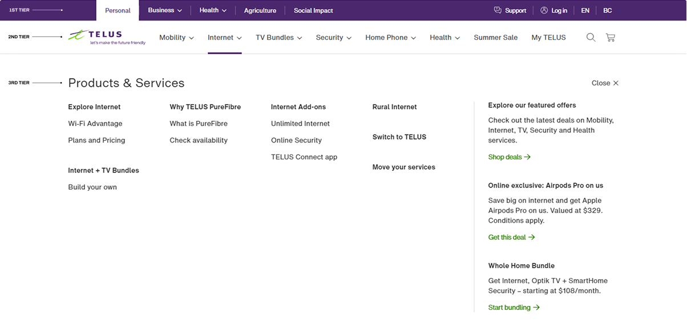
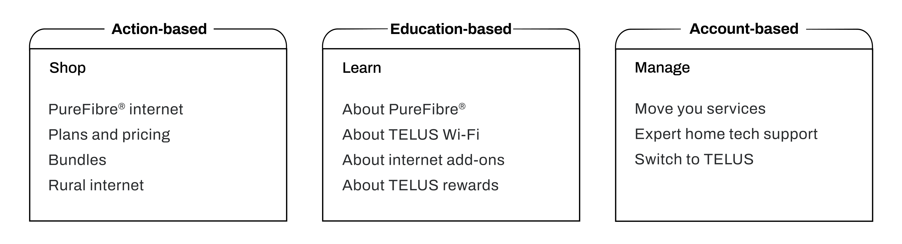
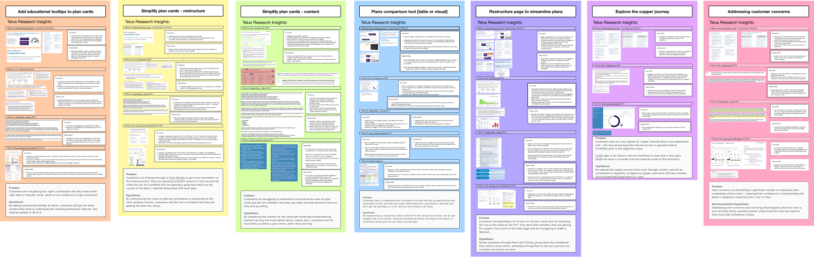
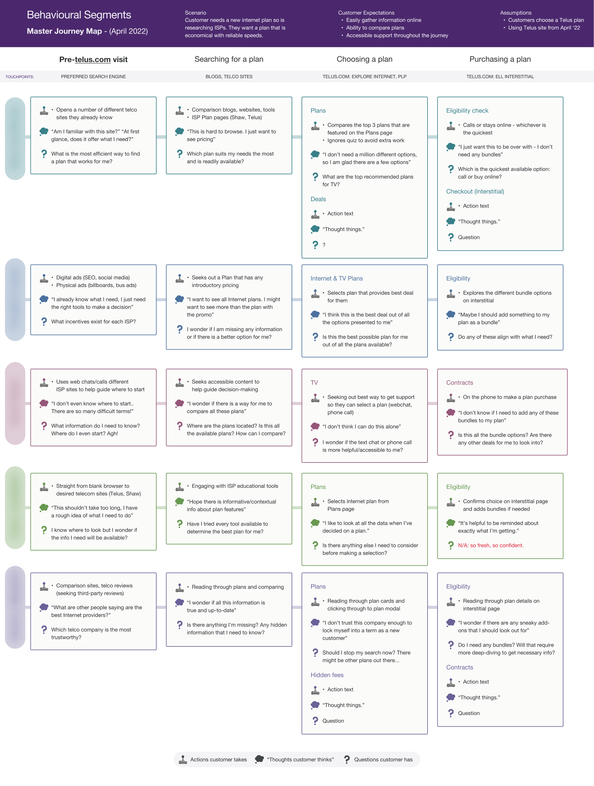
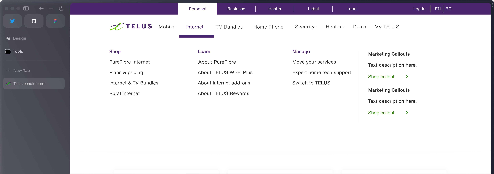

00:00
Telus Internet Sales Journey
UX
2022 – 2024
Navigation redesign for a large Canadian internet service provider’s e-Comm website (telus.com) which saw a 42% increase in desired page visits. This project was part of a larger initiative to increase Telus internet sales. We were tasked to design an effective way-finding system to help convert prospective customers to Telus internet products.
We outlined a clear design strategy, supported frequent A/B tests, and specced out a redesign for a more effective navigation system.
Note: some of the images are blurred out / obscured as they remain under NDA.

Internet plans page for Telus
The Challenge
With the aim to help orient users within a vast set of offerings, Telus’ mega navigation menu was considered prime real estate.
When conducting the site audit, the other designer and I identified many pages surfaced in the 'mega menu' which could serve a better purpose elsewhere.
Objectives
- Increase Telus's internet sales conversation rates (ideally double the baseline sales to traffic conversion rate)
- Maintain or increase customer click-through rate (CTR) to key points in the journey
- Lead user traffic down the conversion funnel and a lower bounce rate

Site when we joined the project (prior to work)
When conducting the site audit, the other designer and I identified many pages surfaced in the mega menu which could serve a better purpose elsewhere, including:
‘Dead-end’ pages: Where a significant amount of pages with low engagement fail to loop customers back through the funnel surfaced on mega nav;
Poor performing pages: A number of pages, which have low conversion rates, are surfaced in the meganav
From this initial research, it was clear what we needed to do. How might we... restructure the navigation so prospective user needs are met and they have a more streamlined purchase journey?
- Recognizable labeling: customers need to know what they are ‘getting themselves into’ when clicking on a menu item
- Easy to use: seeking an intuitive experience on desktop and mobile, rather than flipping between pages to wayfind
- Match expectations: they are satisfied with the info on the page that is linked to the menu item they select
After extensive research (card sorting, user interviews, A/B tests), we restructured the menu and tweaked the content, so the flow was simplified. This meant the pages were more purposeful for the audience they are trying to attract (like prospective internet customers identifying more with the Learn menu items compared to the Manage section.)

Initial UX exploration of menu item restructuring
I synthesized findings from research the client had provided, as well as the analytics. From doing this, it was clear the project may expand into a few different areas for improvement, aside from the meganav.
The aim was to orient the stakeholder in the pain points in the user journey which we aimed to address. During the workshop, I carefully went through each of these subject areas and we triaged key areas for us to focus on, aside from the mega menu.

Synthesis of findings which later informed a workshop I facilitated
After reviewing the existing client research as well as the analytics, I synthesized and specced out this user journey, which made use of Telus’s outlined behavioural segments. This helped the team better understand each user type’s journey when making a purchase.

Outlining each user segment's journey from pre Telus visit to purchasing a plan
Lo- to Hi-Fi
Using a mixture of applying their Allium Design System and designing fresh components, the designers divided and conquered different pages accessible from the mega menu. Here are some examples of my work, starting with low fidelity explorations.

Outlining each user segment's journey from pre Telus visit to purchasing a plan
Here I applied their design system to a few different card options, each targeting different behavioural segments.
Results
Throughout the project, the researcher and I were tracking Decibel analytics. We were frequently testing and iterating based on the metrics. At the project wrap, the refreshed nav we devised saw:
-
42% increase in visits to the internet home page (PureFibre Internet)
-
4% increase in clickthrough rate from the menu (compared to control version)
-
.5% decrease in overall engagement which we rationalized as users getting the information they need in the context of other data.

Final deployment from our engagement with Telus (live as of July, 2025)